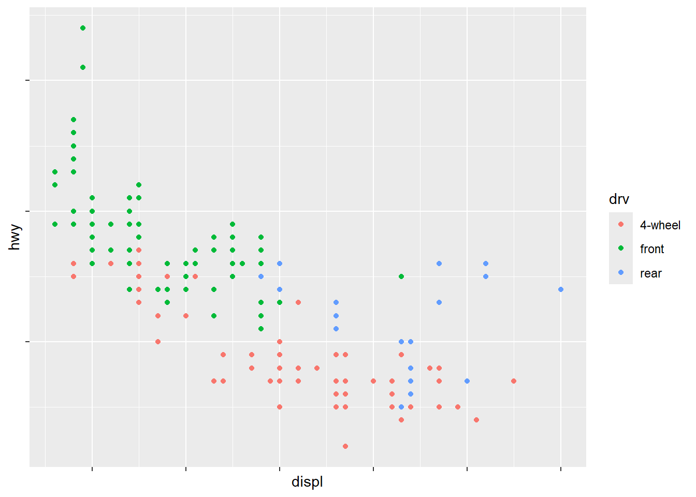

R for Data Science, 2nd Edition - Chapter 11 Notes
11 Communication
Here we go from exploratory to expository graphs.
They recommend The Truthful Art by Albert Cairo as a guide for data visualization.
library(tidyverse)
── Attaching core tidyverse packages ──────────────────────── tidyverse 2.0.0 ──
✔ dplyr 1.1.4 ✔ readr 2.1.6
✔ forcats 1.0.1 ✔ stringr 1.6.0
✔ ggplot2 4.0.1 ✔ tibble 3.3.1
✔ lubridate 1.9.4 ✔ tidyr 1.3.2
✔ purrr 1.2.1
── Conflicts ────────────────────────────────────────── tidyverse_conflicts() ──
✖ dplyr::filter() masks stats::filter()
✖ dplyr::lag() masks stats::lag()
ℹ Use the conflicted package (<http://conflicted.r-lib.org/>) to force all conflicts to become errors
library(scales)
Attaching package: 'scales'
The following object is masked from 'package:purrr':
discard
The following object is masked from 'package:readr':
col_factor
library(ggrepel)library(patchwork)
11.2 Labels
Labels help to make a chart expository.
ggplot(mpg, aes(x = displ, y = hwy)) +geom_point(aes(color = class)) +geom_smooth(se =FALSE) +labs(x ="Engine displacement (L)",y ="Highway fuel economy (mpg)",color ="Car type",title ="Fuel efficiency generally decreases with engine size",subtitle ="Two seaters (sports cars) are an exception because of their light weight",caption ="Data from fueleconomy.gov" )
`geom_smooth()` using method = 'loess' and formula = 'y ~ x'
11.3 Annotations
Sometimes it’s helpful to label individual observations or groups of observations. You can use geom_text(), which functions like geom_point(), but it has an additional aesthetic: label, which is for textual labels to add to your plot.
Use geom_hline() and geom_vline() to add reference lines. We often make them thick (linewidth = 2) and white (color = white), and draw them underneath the primary data layer. That makes them easy to see, without drawing attention away from the data.
Use geom_rect() to draw a rectangle around points of interest. The boundaries of the rectangle are defined by aesthetics xmin, xmax, ymin, ymax. Alternatively, look into the ggforce package, specifically geom_mark_hull(), which allows you to annotate subsets of points with hulls.
Use geom_segment() with the arrow argument to draw attention to a point with an arrow. Use aesthetics x and y to define the starting location, and xend and yend to define the end location.
Use annotate() to highlight just one or two points or ideas.
trend_text <-"Larger engine sizes tend to have lower fuel economy."|>str_wrap(width =30)trend_text
Note the annotaiton is accomplised with a label geom and a segment geom, which are both called within the annotate function, in two separate calls to the function.
ggplot(mpg, aes(x = displ, y = hwy)) +geom_point() +annotate(geom ="label", x =3.5, y =38,label = trend_text,hjust ="left", color ="red" ) +annotate(geom ="segment",x =3, y =35, xend =5, yend =25, color ="red",arrow =arrow(type ="closed") )
11.4 Scales
Control how the aesthetic mappings manifest visually.
ggplot(mpg, aes(x = displ, y = hwy)) +geom_point(aes(color = class))
Behind the scenes, this is what happens:
ggplot(mpg, aes(x = displ, y = hwy)) +geom_point(aes(color = class)) +scale_x_continuous() +scale_y_continuous() +scale_color_discrete() # chooses colors for each of the class of cars
You may want to access these scale functions to change things like breaks on the axes, or the key labels on the legend.
You might want to replace the scale altogether.
Axis ticks and legend keys.
Collectively, axes and legends are called guides. Two arguments affect the appearance of the ticks on the axes and keys on the legend: breaks and labels.
ggplot(mpg, aes(x = displ, y = hwy, color = drv)) +geom_point() +scale_y_continuous(breaks =seq(15, 40, by =5))
labels can be set to NULL, or a vector of length breaks, or in the case of a categorical variables, a named list with mappings to existing level names.
ggplot(mpg, aes(x = displ, y = hwy, color = drv)) +geom_point() +scale_x_continuous(labels =NULL) +scale_y_continuous(labels =NULL) +scale_color_discrete(labels =c("4"="4-wheel", "f"="front", "r"="rear"))

The labels argument can be combined with the scales package. Note that the breaks argument is on the original scale.